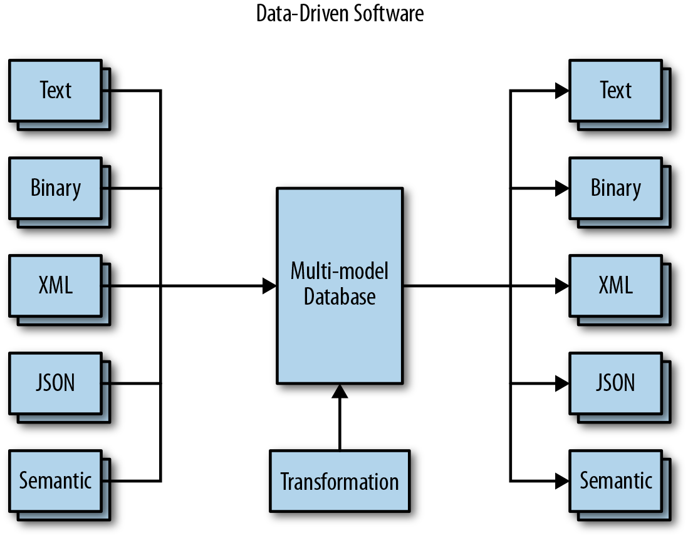

Kirjeldus
Data-driven programming on programmeerimisparadigma, mis keskendub andmete ja nende voogude kasutamisele rakenduse loogika juhtimiseks. Selle lähenemise puhul määravad andmed, kuidas rakenduse loogika töötab, võimaldades paindlikkust ja taasväärtustatavat koodi.
Arendustsükli joonis
Allolev joonis illustreerib Data-Driven Programming tsüklit:
Head ja vead
Head küljed
- Vähendab koodi kordamist, võimaldades andmepõhist otsuste tegemist.
- Tagab paindlikuma ja paremini laiendatava arhitektuuri.
- Sobib hästi rakendustele, kus andmed muutuvad sageli ja vajavad kohest rakendamist.
- Toetab masinõppe ja analüütikapõhiste lahenduste loomist.
Halvad küljed
- Võib suurendada koodi keerukust, kui andmete voog pole selgelt määratletud.
- Andmepõhised vead võivad olla raskesti tuvastatavad ja silutavad.
- Nõuab rohkem testimist, et tagada andmete ja loogika õigsus.
Case-vahend: Apache Kafka
Apache Kafka on populaarne tööriist, mis toetab Data-Driven Programmingut. Kafka võimaldab andmete voogude reaalajas töötlemist, kasutades andmepõhist arhitektuuri.
Apache Kafka omadused
- Võimaldab andmete voogude töötlemist ja haldamist.
- Sobib hästi hajus- ja reaalaja-süsteemidele.
- Pakub suurepärast skaleeritavust ja usaldusväärsust.
Näide Apache Kafka konfiguratsioonist:
# Kafka server konfiguratsioon
log.dirs=/tmp/kafka-logs
num.partitions=3
zookeeper.connect=localhost:2181
broker.id=1
log.retention.hours=168